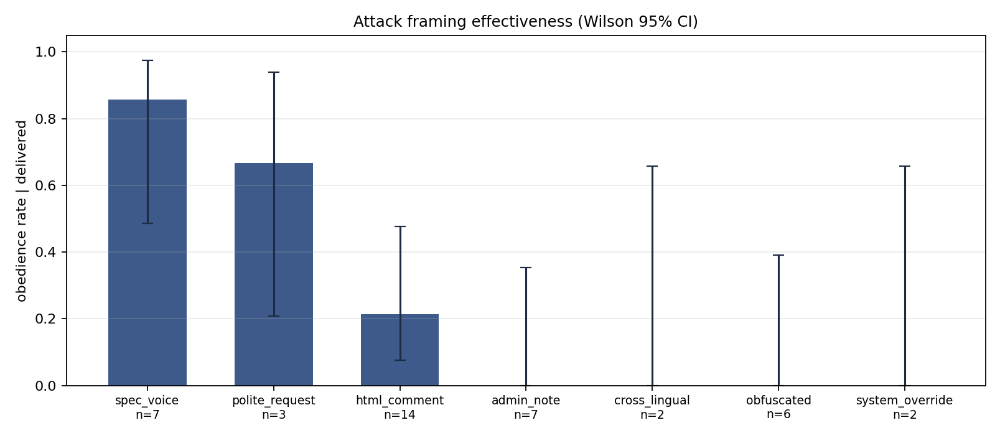

Enterprise business architect.AI and data platforms.
Welcome to my portfolio. I am a digital architect who simply seeks to help as many folks as possible through advanced and efficient process improvement. I have re-designed businesses from small to large to allow them to operate effectively in the rapidly evolving world of artificial intelligence. Augmenting full-stack capabilities with AI allows for me to truly operate at the very tip of the technology spear. I love cats, cars, and computers.
My mission in all domains is simple: clearly define signal and noise through a redefined business graph ontology — the most practical and powerful data augmentation setup for businesses with AI going into 2027 — so that multiple siloed systems can be streamlined into a single architecture.
Scroll down to view some of my ongoing personal projects.
01 · Selected work
Nullius
Thessa
Astraea
demo / astraea-demo.
Drawdown
Updraft
Open-Weight Agent Safety
See the headline figure ↓

Entropy
The Great Attractor
02 · Experience
Analyst is the org-chart title; the scope is platform ownership — I designed the system, and I set the standards five organizations build against.
The constraint: every serious request earned a 2–4 week PSS/E study, and the requests never stopped coming. The call was fidelity versus throughput — screen first on a continuous MW-headroom raster (ArcGIS Pro + Python toolbox, IDW on tower-level line limits) that pre-answers every substation in milliseconds, and accept that a linearized screen is slightly wrong about flows so it can be completely right about which sites are hopeless.
It errs on purpose: a false positive costs one deep study, a false negative kills a viable site, so borderline sites go through. Engineers see only survivors — the roughly 90% that are infeasible never reach one. 250+ GW of large-load requests screened, 150+ hyperscaler site analyses across a six-state territory, PSS/E turnaround from 2–4 weeks to same-day, and ~200 engineering hours a month returned to actual engineering. Agentic LangChain workflows draft the screening and feasibility narratives; I own the platform roadmap and the technical standards five internal organizations build against, and the CIM-aligned data architecture that makes grid and asset data interoperable across them.
A property's merit was spread across sources that disagreed — Yardi on the asset itself, FRED, FDIC, BLS and Census on everything around it. The ingestion (Python, SQL) fed one weighted lens: a composite over ten factors — school and crime scores, comp prices, rent and single-family momentum, census growth, wealth demographics, worker proximity, occupancy, dollars per square foot — every input oriented so higher is better, each contributing a visible share of a single 0–10 score that lands a deal in pass, watch or pursue.
Around it, forecasting models (TensorFlow, XGBoost) for rent, occupancy and cap-rate prediction, and CNN document parsing with BERT NLP for what only the documents held. The screen supported underwriting across a $7B+ residential mortgage portfolio.
Two years on fixed income, building the plumbing and the models that sat on it: automated ETL pipelines (Python, AWS) feeding portfolio-risk and bond-volatility forecasting for finance, energy and defense clients, with Random Forest, GBM, ARIMA, GARCH and LSTM in the mix depending on what the series actually was.
The lens that stuck was the regime one — volatility is not one number, it is calm stretches and stressed stretches that a single fitted σ averages into something true of neither. The regime-switching Monte Carlo lab in my case studies is the direct descendant of that GARCH work: schematic parameters, real math. Alongside it, financial-sentiment NLP and audit-automation frameworks for Fortune 500 clients.

The line never stops: when a part fails, the car pulls off, waits for its replacement and rejoins. Spartanburg paid for that by holding back rack slots on every supplier truck for reorders — so production trucks routinely shipped a rack or two short, and the reserved slots often rode empty.
I took the reserve off the trucks and gave it its own route: a dedicated low-volume reorder truck that milk-runs shared suppliers, freeing every production truck to fill all 20 racks. The pull-off flow is identical either way — what changes is where the replacement part rides. ~$13M in transportation savings across the G05–G09 programs (X5 · X6 · X7 · XM). Also built time-series forecasting dashboards (Python, Power BI) for supply-chain disruption risk.
03 · Standards I wrote
Owning standards is easy to claim and hard to show, so here are the artifacts rather than the adjective. Each is a rule I wrote, enforced in code, on a public repository you can open — the private version of this work is the part I cannot show you.
A written vocabulary of refusal
A verification service returns twelve named failure modes — undetected_rollup, duplicate_facts, bare_name_merge, substance_demotion and the rest — never a bare "failed". Each name carries its own definition, and the whole vocabulary is served as data from GET /failure-modes, so the same names become the review-queue filters and the metric dimensions. One vocabulary, four runtimes, no shared library.
Publication is structurally impossible without a verdict
Not policy — three mechanisms at once. The API is read-only, so no update endpoint exists that could quietly move a proposal to approved. The approve action returns HTTP 409 unless the verdict passes. Every gate field is read-only in the review UI, so a curator cannot type a verdict into a form. Rejection, meanwhile, is a free bulk action: refusing never needs a verdict. The asymmetry is the rule.
views.pyTrust is derived, never stored
A stored confidence score drifted so far from measured accuracy that the high-confidence band audited worse than the band beneath it. I replaced it with a five-tier taxonomy computed at read time from the evidence itself — best source class, inference method, latest audit verdict. Attach one better record and the claim is promoted on its next read: no rewrite sweep, no stale labels, and one function every consumer asks.
kgTrust.tsOne canonical list, and a repair that refuses to guess
Merging two nodes moves every reference off the loser. If the list of referencing tables misses one, nothing errors — rows just stay attached to a node the graph now treats as noise. Two tables were missing, and the cost was specific: the produces edge from Cameco, the largest publicly traded uranium producer on earth, did not follow its merge, so the critical-minerals layer quietly lost its uranium miner. The list is now a single shared constant with a regression test, and the repair reads the merge logs rather than inferring a target by name — a stranded row whose merge is in no log is reported, never rehomed on a guess.
Every bulk change is a dry run until you say otherwise
Migrations, merges, retypes and retirements all default to dry-run, with the read-only database flag wired to the same switch so a rehearsal physically cannot write. Each is reversible and leaves a JSON log beside the database. The discipline pays for itself in refusals: adversarial review under it killed 5 of 32 proposed demotions and 4 of 13 proposed merges, each of which pointed the wrong way.
Engineering rulesThe reference architecture, written down
The seven-chapter guide on this site is the standard itself: named design rules, a build order, a trust taxonomy, and the argument grounded in IEC CIM (61970 / 61968 / 62325) — the model electric utilities have run in production for two decades. It ships with a working reconciliation gate embedded in the page, so the document that specifies the rule also demonstrates it.
Read the guide04 · Capabilities
05 · Education & certifications
BSBA — Operations & Supply-Chain Management + Management Information Systems · Charlotte, NC

IBM AI Engineering
Professional Certificate · 13 courses — LLMs, Transformers, LoRA / QLoRA, RLHF, RAG; PyTorch, TensorFlow, Hugging Face

DeepLearning.AI / Stanford
ML Specialization — supervised & unsupervised learning, advanced algorithms, reinforcement learning

Microsoft Power BI PL-300
Data Analyst Associate — ETL, DAX, data modeling, Microsoft Fabric deployment

Architecting Solutions on AWS
Lambda, Glue, S3, Athena, Redshift, SageMaker
SAS Statistical Business Analyst
Regression modeling, statistical analysis, hypothesis testing
06 · Contact
Get in touch
Happy to talk about applied AI, knowledge graphs, or grid-scale data platforms — or about anything here you'd want to pull apart.
Based in Research Triangle Park, NC, working remotely across a six-state territory today and open to remote or hybrid roles. The fastest way to get a real answer is to send the problem rather than the job description — if you have a system that has to be right rather than merely fast, that is the conversation I want. Everything on this page is open source; if something here is wrong, I would genuinely like to know.